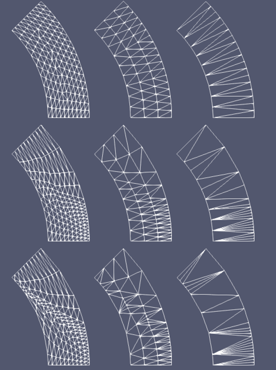

- num_layersLayers of elements for transition.
C++ Type:unsigned int
Controllable:No
Description:Layers of elements for transition.
- positions_vector_1Array of the node positions of the first boundary.
C++ Type:std::vector<libMesh::Point>
Controllable:No
Description:Array of the node positions of the first boundary.
- positions_vector_2Array of the node positions of the second boundary.
C++ Type:std::vector<libMesh::Point>
Controllable:No
Description:Array of the node positions of the second boundary.
FillBetweenPointVectorsGenerator
This FillBetweenPointVectorsGenerator object is designed to generate a transition layer with two sides containing different numbers of nodes.
Overview
The FillBetweenPointVectorsGenerator class uses the fundamental functionalities of FillBetweenPointVectorsTools. Therefore, this class provides a testing tool for FillBetweenPointVectorsTools as well as a generalized platform for users to create meshes using the tool set. Users are required to provide the three major inputs needed to use FillBetweenPointVectorsTools:
"positions_vector_1" and "positions_vector_2": the vectors of points on the two boundaries (i.e., Side 1 and Side 2).
"num_layers": number of element sublayers.
Aside from these fundamental input parameters, users can also assign block and the external boundary IDs through "block_id" and "input_boundary_1_id"/"input_boundary_2_id"/"begin_side_boundary_id"/"end_side_boundary_id".

Figure 1: A schematic drawing showing different transition layer meshes generated between two arc boundaries: (left to right) very fine mesh, fine mesh, and coarse mesh; (top to bottom) uniformly distributed nodes, slightly biased nodes, and heavily biased nodes.
In general, FillBetweenPointVectorsGenerator handles many different scenarios. As shown in Figure 1, non-uniformly distributed boundary nodes (i.e., biased) may be input. The mesh generator does have some limitations. For example, the two input curves cannot intersect each other; and the interpolated nodes should not lead to flipped elements or overlapped elements. Due to the complexity of geometry, the mesh generator may not produce an error message in all the problematic cases. Users should cautiously examine the generated mesh by setting "show_info" as true and by running a simple diffusion problem.
The spacings of element sublayers can be biased by setting "bias_parameter". Any positive "bias_parameter" is directly used as the fixed mesh biasing factor with the default value 1.0 for non-bias. By setting "bias_parameter" as 0.0, automatic biasing will be used, where the local node density values on the two input boundaries are used to determine the local biasing factor (see Figure 2 as an example). In that case, Gaussian blurring is used to smoothen the local node density to enhance stability of the algorithm, which can be tuned through "gaussian_sigma".
Figure 2: A schematic drawing showing different biasing option for sublayers: (left) non-bias; (middle) fixed biasing factor = 0.8; (right) automatic biased based on boundary nodes.
In some special cases, when "positions_vector_1" and "positions_vector_2" have the same length, users can set "use_quad_elements" as true to construct the transition layer mesh using quadrilateral elements (see Figure 3 as an example).
Figure 3: A schematic drawing showing a transition layer meshed by quadrilateral elements.
Example Syntax
[Mesh]
[fbpvg]
type = FillBetweenPointVectorsGenerator
positions_vector_1 = '${fparse r1*cos(th1_1/180.0*pi)} ${fparse r1*sin(th1_1/180.0*pi)} ${fparse z}
${fparse r1*cos(th1_2/180.0*pi)} ${fparse r1*sin(th1_2/180.0*pi)} 0.0
${fparse r1*cos(th1_3/180.0*pi)} ${fparse r1*sin(th1_3/180.0*pi)} 0.0
${fparse r1*cos(th1_4/180.0*pi)} ${fparse r1*sin(th1_4/180.0*pi)} 0.0
${fparse r1*cos(th1_5/180.0*pi)} ${fparse r1*sin(th1_5/180.0*pi)} 0.0'
positions_vector_2 = '${fparse r2*cos(th2_1/180.0*pi)} ${fparse r2*sin(th2_1/180.0*pi)} 0.0
${fparse r2*cos(th2_2/180.0*pi)} ${fparse r2*sin(th2_2/180.0*pi)} 0.0
${fparse r2*cos(th2_3/180.0*pi)} ${fparse r2*sin(th2_3/180.0*pi)} 0.0
${fparse r2*cos(th2_4/180.0*pi)} ${fparse r2*sin(th2_4/180.0*pi)} 0.0
${fparse r2*cos(th2_5/180.0*pi)} ${fparse r2*sin(th2_5/180.0*pi)} 0.0
${fparse r2*cos(th2_6/180.0*pi)} ${fparse r2*sin(th2_6/180.0*pi)} 0.0
${fparse r2*cos(th2_7/180.0*pi)} ${fparse r2*sin(th2_7/180.0*pi)} 0.0
${fparse r2*cos(th2_8/180.0*pi)} ${fparse r2*sin(th2_8/180.0*pi)} 0.0
${fparse r2*cos(th2_9/180.0*pi)} ${fparse r2*sin(th2_9/180.0*pi)} 0.0
${fparse r2*cos(th2_10/180.0*pi)} ${fparse r2*sin(th2_10/180.0*pi)} 0.0'
num_layers = 3
input_boundary_1_id = 10
input_boundary_2_id = 10
begin_side_boundary_id = 10
end_side_boundary_id = 10
[]
[]
Input Parameters
- begin_side_boundary_id10000Boundary ID to be assigned to the boundary connecting starting points of the positions_vectors.
Default:10000
C++ Type:short
Controllable:No
Description:Boundary ID to be assigned to the boundary connecting starting points of the positions_vectors.
- bias_parameter1Parameter used to set up biasing of the layers: bias_parameter > 0.0 is used as the biasing factor; bias_parameter = 0.0 activates automatic biasing based on local node density on both input boundaries.
Default:1
C++ Type:double
Controllable:No
Description:Parameter used to set up biasing of the layers: bias_parameter > 0.0 is used as the biasing factor; bias_parameter = 0.0 activates automatic biasing based on local node density on both input boundaries.
- block_id1ID to be assigned to the block.
Default:1
C++ Type:unsigned short
Controllable:No
Description:ID to be assigned to the block.
- end_side_boundary_id10000Boundary ID to be assigned to the boundary connecting ending points of the positions_vectors.
Default:10000
C++ Type:short
Controllable:No
Description:Boundary ID to be assigned to the boundary connecting ending points of the positions_vectors.
- gaussian_sigma3Gaussian parameter used to smoothen local node density for automatic biasing; this parameter is not used if other biasing option is selected.
Default:3
C++ Type:double
Controllable:No
Description:Gaussian parameter used to smoothen local node density for automatic biasing; this parameter is not used if other biasing option is selected.
- input_boundary_1_id10000Boundary ID to be assigned to the boundary defined by positions_vector_1.
Default:10000
C++ Type:short
Controllable:No
Description:Boundary ID to be assigned to the boundary defined by positions_vector_1.
- input_boundary_2_id10000Boundary ID to be assigned to the boundary defined by positions_vector_2.
Default:10000
C++ Type:short
Controllable:No
Description:Boundary ID to be assigned to the boundary defined by positions_vector_2.
- use_quad_elementsFalseWhether QUAD4 instead of TRI3 elements are used to construct the transition layer.
Default:False
C++ Type:bool
Controllable:No
Description:Whether QUAD4 instead of TRI3 elements are used to construct the transition layer.
Optional Parameters
- control_tagsAdds user-defined labels for accessing object parameters via control logic.
C++ Type:std::vector<std::string>
Controllable:No
Description:Adds user-defined labels for accessing object parameters via control logic.
- enableTrueSet the enabled status of the MooseObject.
Default:True
C++ Type:bool
Controllable:No
Description:Set the enabled status of the MooseObject.
- save_with_nameKeep the mesh from this mesh generator in memory with the name specified
C++ Type:std::string
Controllable:No
Description:Keep the mesh from this mesh generator in memory with the name specified
Advanced Parameters
- nemesisFalseWhether or not to output the mesh file in the nemesisformat (only if output = true)
Default:False
C++ Type:bool
Controllable:No
Description:Whether or not to output the mesh file in the nemesisformat (only if output = true)
- outputFalseWhether or not to output the mesh file after generating the mesh
Default:False
C++ Type:bool
Controllable:No
Description:Whether or not to output the mesh file after generating the mesh
- show_infoFalseWhether or not to show mesh info after generating the mesh (bounding box, element types, sidesets, nodesets, subdomains, etc)
Default:False
C++ Type:bool
Controllable:No
Description:Whether or not to show mesh info after generating the mesh (bounding box, element types, sidesets, nodesets, subdomains, etc)